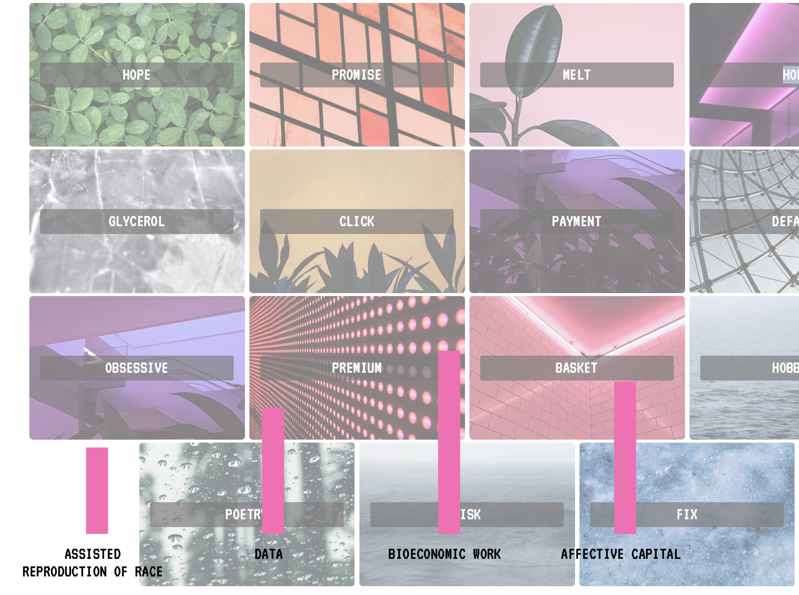

-

Postinternet Queer Reproductive Work & the Fixed Capital of Fertility
This doctoral research focuses on the “digital fixed capital" of assisted reproduction and addresses the Internet interface as a space of imagination and memory-making. It looks at the role of websites in conditioning notions of “personal reproductive choice” and situates this in a longer history of access to reproductive technologies since the 1970s. How have artists responded to the policies and politics of reproductive control?
The concept of “post-internet queer reproductive work” fuses three scholarly traditions: the study of queer work, theorizations of reproductive labor and the concept of fixed capital. Broadly, the dissertation proposes a reclaiming of the interface, network and viral as themes and modes of artistic response to reproductive governance. The project layers critical, historical, audio-visual and poetic gazes as an artistic research method that centres bodily feeling and political becomings.Research funded by Kone Foundation and book published by Aalto University ARTS press.
-

Animation, time-lapse microscopy and reproduction
The Wife of Them All (2022) animation film derives from research around the aesthetic links between time-lapse microscopy, clay animation and ideas of biological and social plasticity. Lying at the intersection of science fiction and documentary, the film follows a family based across continents as they critique and move beyond borders, mad bureaucracy and precarious work.
The characters are voiced by (non)actors and actvists including Sabrina Michelle Rivera Sanchez (Coordinator at Sexwork Europe, Amsterdam, and member of Otras Sindicato de Trabajadoras Sexuales Spain); Alejandra Durga Ramos (Former member of Barcelona’s Sindihogar Union of Domestic Workers) and Pratibha Parmar (UK/US artist and filmmaker).
Premiers at the 27th LesGaiCineMad, Turku Video Art Festival and the 69th Oberhausen Short Film Festival with the support of HAMACA moving image platform. Film website.
-

Them All Magazine
Them, All Magazine supports feminist, queer and antiracist derivations and deviations of reproductive labour AT THE LEVEL OF the word, sentence, string, command line, stanza, interface and page.
The project brings together poetry and Net/Software/Code art on the subject of reproductive politics and sexuality. It derives from research around histories of Queer Net Art works and maga/zines that have addressed questions of access to reproductive resources and medical technologies. For example, the 1970s magazine Sappho in the UK who published poetry and operated as a network for resource sharing across disability, sexuality, race and class struggles, and who used a form of sexuality and gender non-conformity as an expansive mode of collective action.
The project is hosted with Systerserver, a server run by feminists using free and open source software (FOSS). It acts as a place to learn system administration skills, host services and inspire others to do the same.
-

Gestures and Inscriptions in Ceramics and Sound
This body of work establishes a link between the artistic gesture and the "inscription", as theorised by early Science and Technology Studies (STS) and connect these in turn to practices of inscription in ceramics, in particular sgraffito, a form of mark-making in which a layer of slip is removed to reveal the surface of the clay below. I use sgraffito in the projects to suggest the literal ways in which cultural, scientific and economic inscription determine the material forms that institutions –from the institution of the museum to the institution of perception– take.
Following the creative and critical work of many activists, artists and scholars of reproduction, these projects approach reproductive politics not only as an issue of reproductive health –of access to reproductive technologies or individual reproductive choices– but as the daily negotiation of the body’s value and visibility across communication, labour and political fields.Deriving in ceramic and sound installations, a piece of drawing software using p5.js and an academic article.
-

Artistic responses to public health crisis
My curatorial work has focused on HIV/AIDS-related feminist video art in the UK during 1980s-1990s, particularly Pratibha Parmar's 1989 work Reframing Aids, which addressed the crisis in terms of its wider implications for racial politics, borders, education and police practices in the UK. I worked for Pratibha Parmar as an archivist and curated "Notes on Visual Justice: Pratibha Parmar’s early work" (LGBT Centre, Barcelona, 2020) and co-curated "Desire and Resistance: Pratibha Parmar" at the Reina Sofia Museum (2019), which were timely reconsiderations of Pratibha Parmar's work in the Spanish context.
This research has also derived in essays, academic articles, a collective performance and archival research project on "narratives of contagion" from the 19th century hygiene movement to the present, resulting in a a publication and a documentary film; and talks.
-

Net Art horizons beyond parody
There's a tendency accross Net Art, Post-internet art, Cyberfeminism and their intersections to parody corporate visuality. Following many artists and makers working at the margins of this tradition, I create browser based works that move with but also beyond parody as a strategy. How can the interface be reclaimed to imagine/remember dissident economies, ontologies and biologies of re/production?
This research has derived in Net Art works ( Classic Gold Premium, exhibited in "Cybermfeminism Revisited 2021", curated by Mel Clemmons & Liss Lafleur; The Wife of Them All Net Art website and; Networks of Care and Critique, exhibited in "The Love Ethic", curated by Katie Chaan), as well as writing about historical works of Net Art in my doctoral thesis.